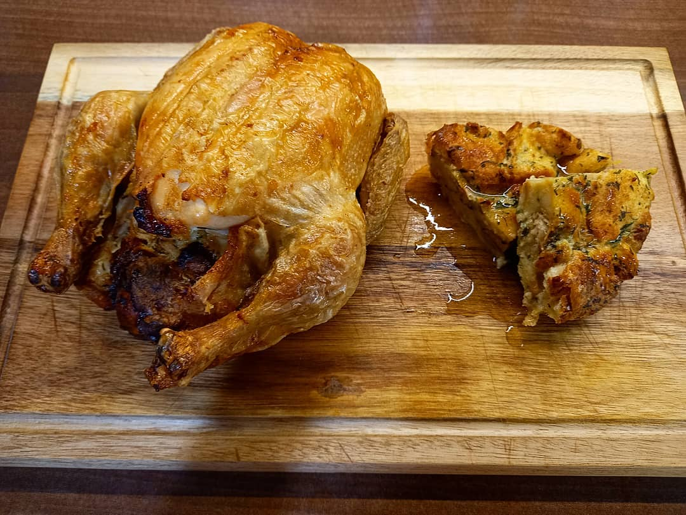

Pečené kurča podľa @babusa_jozef — Normy Jedál
Pečené kura s plnkou🤩😋
Recept:
Kura:
• 1 kura
• soľ
Plnka:
• 3 suchšie rožky
• 40g masla
• 1,5dl mlieka
• petržlenová vňať
• 2 vajcia
• soľ
• cibuľa
• biele korenie
Postup: kura očistíme, a osolíme.
Rožky nakrájame na kocky a osmažíme na suchej panvici. Na masle osmažíme cibuľu do zlatohneda, zalejeme mliekom a vylejeme na rožky. Pridáme ostatné suroviny, dobre premiešame a necháme nasiaknuť. Naplníme kura a pečieme na mriežke nad podliatym plechom, 150 stupňov°C 1,5 hodiny.
Výpek zliať a kura na 250°C dopiecť do chrumkava. Do výpeku pridáme lyžicu masla a premiešame.
Dobrú chuť 😊
#chicken #wholechicken #bakedchicken #bakedwholechicken #🐓 #kura #pecenekura #pecenekurca #kurasplnkou